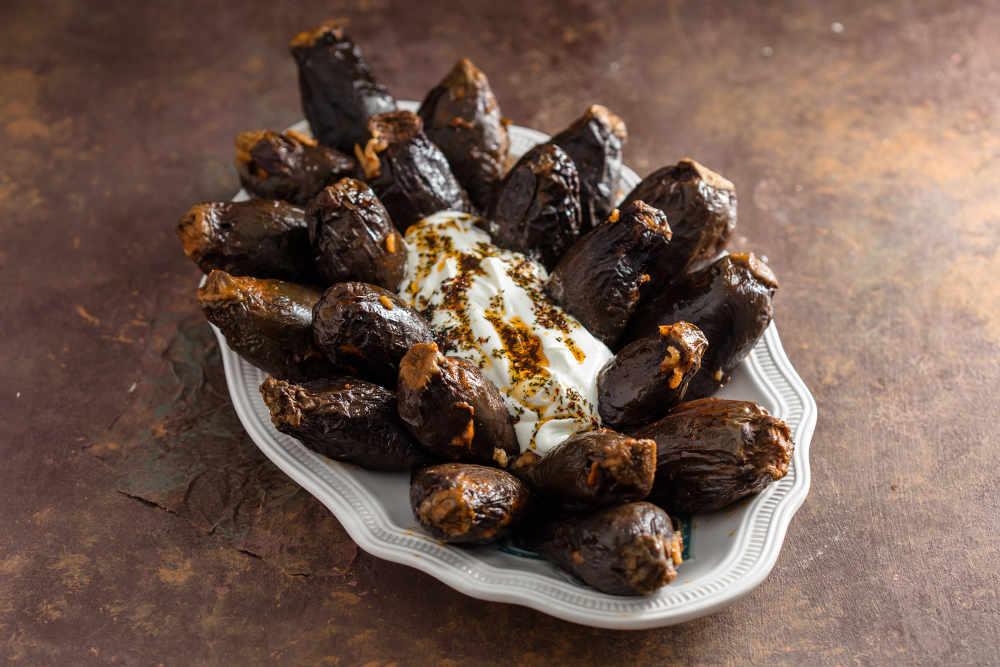

Patlıcan dolmasi is a Turkish take on stuffed eggplants. They are often offered as a meze in many kebab places throughout the country. The dish is typically prepared with dried eggplants, when it’s known as kuru patlıcan dolmasi. The dried eggplants should first be blanched until they soften, and are then stuffed with ingredients such as mint, pomegranate molasses, onions, ground meat, rice, bulgur, currants, or pine nuts.
Meal prep time : 2 hours 30 minutes
Servings : 6